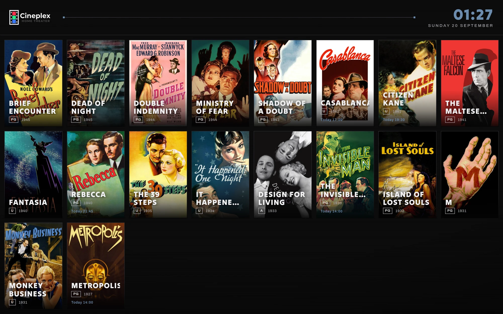
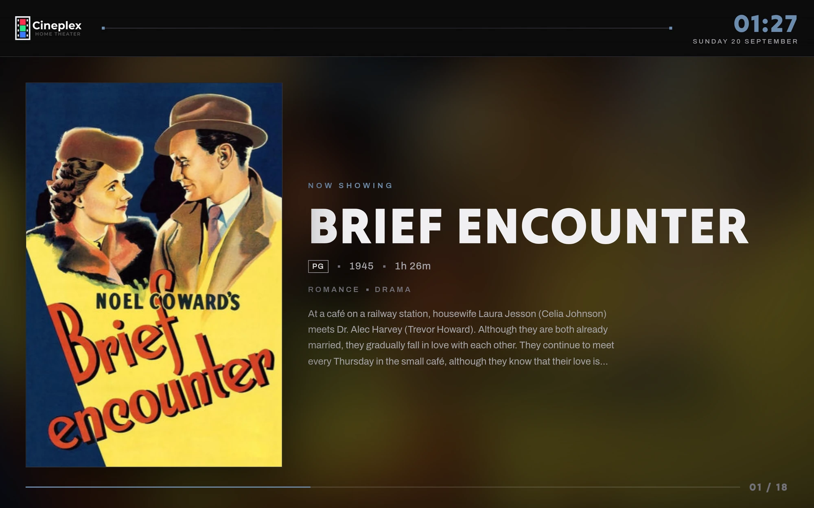
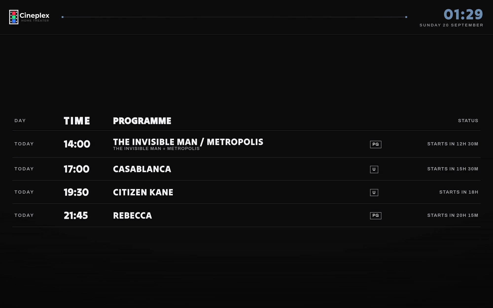
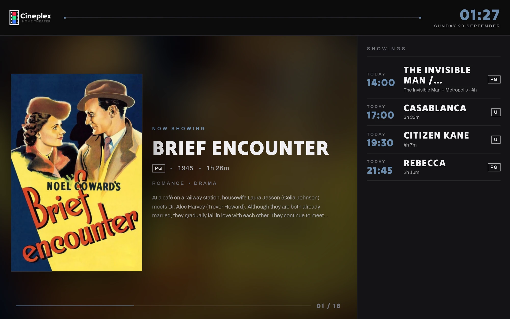

A theater at home
Turn your digital film collection into a functioning theater. Cinefin
manages and plays trailers, custom pre-roll, handles home automation. Build programmes, schedule screenings, print tickets, and run a theater at home.
Grab the latest release for your platform on GitHub · self-hosted, no telemetry · Linux & Windows.
Current Features
Run your home theater like a pro
Build the programme
Sync your libraries from Plex and JellyfinTrailer matching by genre, year and certificationCustom pre-roll for your own media, ads or announcementsRatings cards generated for MPAA or BBFCTitle cards designed and loaded per screeningRe-usable templates , fully configurable
Playout
Playout via MPV — embedded, or your own instance on the networkHome Assistant & REST for room automationPhone remote to drive playbackScheduled screenings that run themselves
Front of house
Kiosk mode for a spare screen or tabletThermal ticket printing Box office - ticket designs, seats and printing
Look inside
Screenshots
A double bill programme.
The box office — ticket designs, seats and printing.
Playout remote control.
Programme editor.




The kiosk turns a spare screen or old tablet into the front of house.